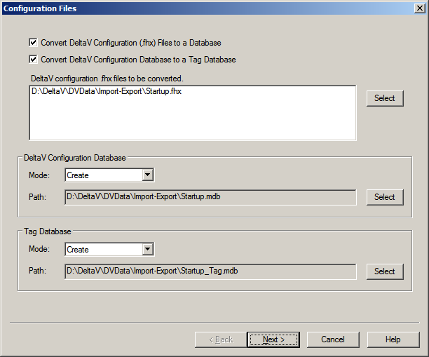
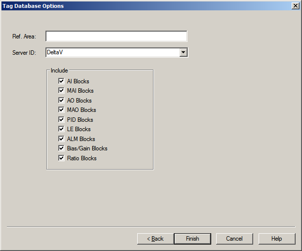

Convert .fhx DeltaV configuration files to .mdb database files
- .fhx DeltaV configuration files to .mdb database files compatible with Microsoft Access 2003
- .mdb database files to Tag database files compatible with Microsoft Access 2003
Configuration Files dialog

To specify one or more .fhx files for conversion to a .mdb database file, enable the Convert DeltaV Configuration (.fhx) Files to a Database option, and then click the Select button for the DeltaV configuration .fhx files to be converted field. If you select more than one .fhx file, a single .mbd database file is created, containing data from all specified .fhx files. You can change the default full path for the converted .mdb database file by clicking the Select button for the DeltaV Configuration Database options. If you specify an existing .mdb database file, you can either append additional data to it or overwrite it by selecting one of these options on the Mode pull-down list.
You can simultaneously convert one or more .fhx files to a .mdb database file and to a Tag database file by enabling the Convert DeltaV Configuration Database to a Tag Database option in addition to the Convert DeltaV Configuration (.fhx) Files to a Database option. If you select more than one .fhx file in the DeltaV configuration .fhx files to be converted field, a single Tag database file is created, containing data from all specified .fhx files. You can change the default full path for the converted Tag database file by clicking the Select button for the Tag Database options. If you specify an existing Tag database file, you can either append additional data to it or overwrite it by selecting one of these options on the Mode pull-down list.
Alternatively, you can convert an existing .mdb database file to a Tag database file by enabling the Convert DeltaV Configuration Database to a Tag Database option, and then clicking the Select button for the DeltaV Configuration Database field to specify a .mdb database file. You can change the default full path for the converted Tag database file by clicking the Select button for the Tag Database options. If you specify an existing Tag database file, you can either append additional data to it or overwrite it by selecting one of these options on the Mode pull-down list.
After specifying options in the Configuration Files dialog, click the Next button to open the Tag Database Options dialog.
Tag Database Options dialog

The Tag Database Options dialog contains the following options:
- Ref. Area
If the Convert DeltaV Configuration Database to a Tag Database option was not enabled in the Configuration Files dialog, the Ref. Area field is disabled.
- Server ID
If the Convert DeltaV Configuration Database to a Tag Database option was not enabled in the Configuration Files dialog, the Server ID field is disabled. Otherwise, enter a server name or select one from the pull-down list, and then enable one or more blocks to inclulde.
After specifying options in the Tag Database Options dialog, click the Finish button to create the converted database files.